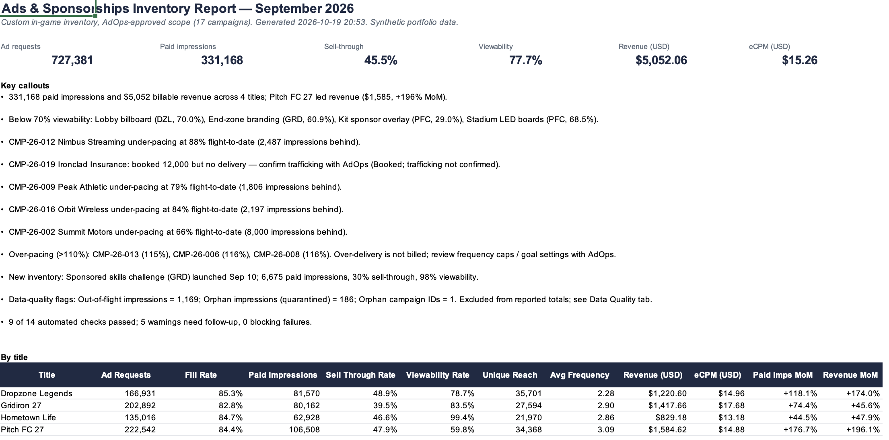
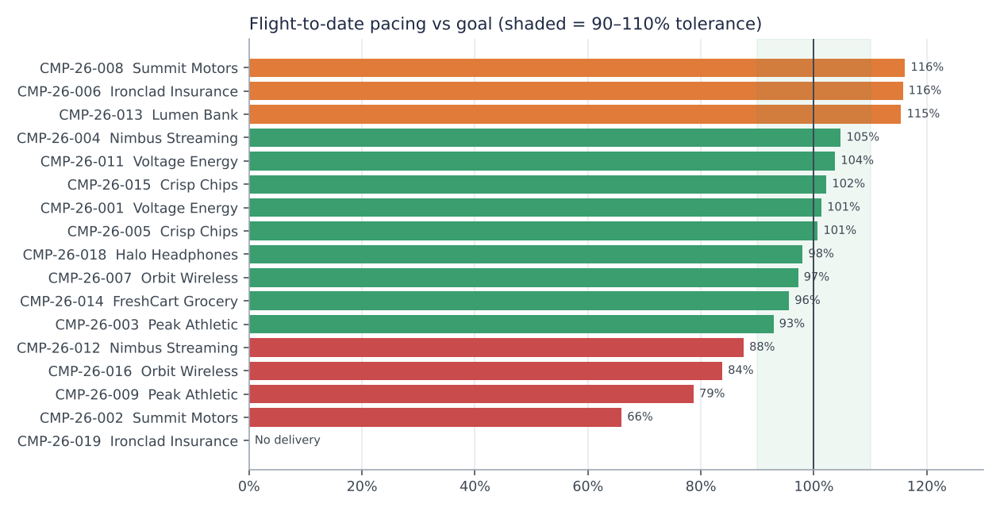
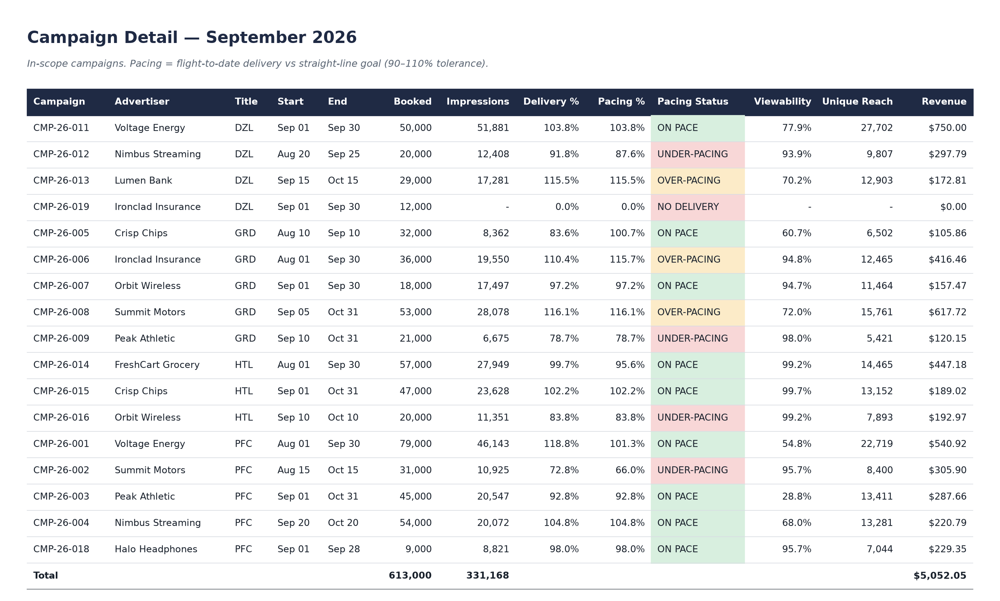
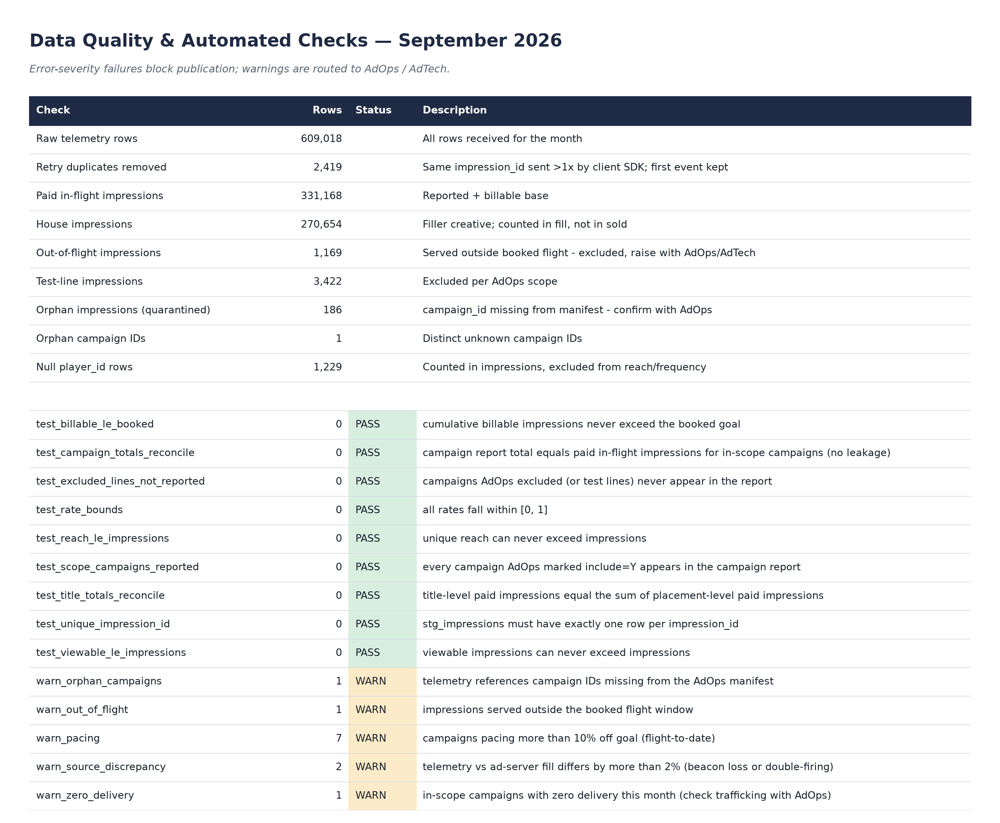
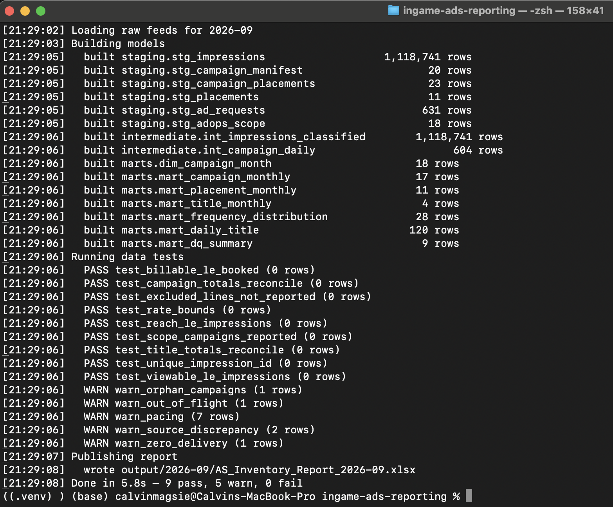

In-game ad inventory reporting
The monthly report an Ads & Sponsorships team runs on, rebuilt as a pipeline. One command turns raw game telemetry and the AdOps campaign book into a tested, reproducible report for Sales, AdOps, Product, and Revenue Strategy.
- Role
- Solo project: design, SQL, Python
- Stack
- Python, SQL, DuckDB, BigQuery, GitHub Actions
- Scale
- 4 titles, 11 placements, 1.1M events
- Data
- Simulated, with real-world defects built in

Four teams, one monthly report
Game publishers sell branded space inside their games: stadium boards, end-zone logos, lobby billboards, loading-screen video, mobile rewarded ads. Every month, the people selling and running that inventory need the same report, and each team reads it for a different answer.
Built by hand, that report means exports from every studio, a campaign list pasted in from email, and pivot tables that never quite tie out. Nobody can reproduce last month's numbers.
Sales
How much inventory did we have, and how much of it did we sell?
AdOps
Which campaigns are behind or ahead of what we booked?
Product
Is the placement we just launched actually working?
Revenue Strategy
What did we earn, and at what price per thousand impressions?
How the monthly run works
Agree on scope
AdOps approves which campaigns count this month. Without that file, the run stops.
Clean
Duplicate events are removed and the MRC viewability standard is applied once.
Classify
Every impression lands in a bucket: paid, house, test, out of flight, or unknown campaign.
Check
14 SQL checks run. Any blocking failure stops the report from going out.
Publish
A 9-tab Excel report, charts, and a run log for audit.
What September's report surfaced


images/03-campaign-detail.pngCampaign Detail tab, Pacing Status column visible- Four placements below 70% viewability. The kit sponsor overlay sat at 29%, a creative-size conversation for Product.
- Four campaigns under-pacing, one never delivered. The worst was 8,000 impressions behind goal.
- New inventory with room to sell. The new skills-challenge placement had 98% viewability but only 30% sell-through.
- A gap on mobile. Game telemetry ran about 3% below the ad server, a sign of lost tracking events, flagged for AdTech.
Numbers you can defend
A report four teams depend on has to be right before it is fast. Every run checks itself, and a failed check means nothing gets published.

images/04-data-quality.pngData Quality tab, test results table
images/05-terminal.pngTerminal: python3 src/run_pipeline.py --month 2026-09The billing rule, in SQL
Advertisers pay for what they booked, not for over-delivery. A running total over each campaign's flight caps billable impressions at the booked goal.
with running as (
select d.*, m.booked_impressions,
sum(d.impressions) over (
partition by d.campaign_id order by d.event_date
rows between unbounded preceding and current row
) as cum_impressions
from daily d join stg_campaign_manifest m using (campaign_id)
)
select campaign_id, event_date, impressions,
-- only bill up to the booked goal; anything past it is bonus delivery
greatest(0, least(impressions,
booked_impressions - (cum_impressions - impressions))) as billable_impressions
from runningWhat I would build next
Dashboards per team. Live views on the same tables for Sales, AdOps, and Revenue Strategy, with access limited by role.
Mobile reconciliation. Match ad-server and game events one by one instead of by day, using the mediation feed.
Smarter goals. Spread each booked goal by forecast traffic rather than evenly across the flight.
Direct feeds. Land ad-server exports in BigQuery and pull the AdOps scope from a shared sheet, removing the last manual hand-offs.